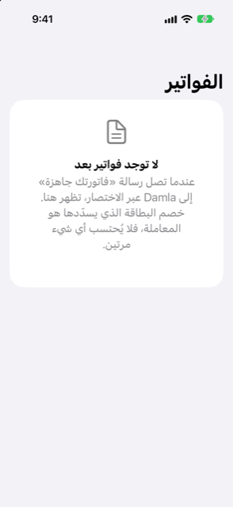

الدليل › التخطيط
فواتير قادمة
كيف تُتذكَّر فاتورة تعلنها رسالة ثم تُسوَّى بخصم البطاقة.
«فواتير قادمة» هي المكان الذي تحتفظ فيه Damla بالفاتورة منذ أن تعلنها رسالة («فاتورتك جاهزة») حتى وصول الخصم الذي يسددها. الإعلان بحد ذاته ليس إنفاقًا: لم يتحرك أي مال. خصم البطاقة أو البنك الذي يسدد الفاتورة هو العملية الحقيقية الوحيدة، وهو الذي يسوّي الفاتورة هنا، فلا يُحتسب أي شيء مرتين.

متى تستخدمها
- ترسل إحدى شركات الخدمات أو غيرها رسالة «فاتورتك جاهزة» وتريد أن تُحفظ دون تسجيلها كإنفاق.
- تريد أن ترى كل ما أُعلن ولم يُخصم بعد، مع المبالغ وتواريخ الاستحقاق.
- سُجّلت فاتورة بالخطأ وتريد إزالتها.
خطوة بخطوة
- دع إشعار الفاتورة يصل إلى Damla عبر أتمتة الاختصار (أو الصق الرسالة في أضف بجملة).
- افتح تبويب الخطة وانقر فواتير قادمة. عنوان الصفحة يكون الفواتير؛ ويعرض اليوم إشعارًا بكلمات فواتير قادمة يفتح هذه القائمة نفسها.
- انقر فاتورة لترى تفاصيلها: المبلغ، وتاريخ الاستحقاق، وحساب العميل الذي تخصه، والتفصيل، وبمجرد معرفته، البطاقة أو الحساب الذي يسدد ذلك المزوّد عادة.
- عندما يصل الخصم (تنبيه بطاقة أو سطر كشف حساب)، تطابقه Damla مع الفاتورة فتنزل الفاتورة إلى المدفوع. لا تحتاج إلى فعل أي شيء.
- تحقّق من العملية المسوّاة في «النشاط»: عندما كانت للفاتورة تفصيل، يحمل خصم المزوّد الآن تصنيفات الفاتورة.
كيف تُسوّى الفاتورة
- الخصم المطابق هو العملية الوحيدة للفاتورة. إذا كان تفصيل الفاتورة يساوي تمامًا إجماليها، يُقسَّم ذلك الخصم الواحد على التصنيفات وفق بنود التفصيل. الكهرباء والماء والتبريد والغاز والإنترنت والهاتف والصرف الصحي تذهب إلى الفواتير والخدمات (أو الخدمات إن لم يكن لديك تصنيف كهذا). السكن يذهب إلى السكن (أو الإيجار، أو الفواتير والخدمات). والبند الذي لا يناسبه أيٌّ من هذه يحتفظ بالتصنيف الذي سُجّل تحته الخصم.
- ثم تُعلَّم الفاتورة كمدفوعة، وتتذكر Damla البطاقة التي تسدد ذلك المزوّد.
- تذكيرات الفاتورة نفسها («مستحق»، «متأخرة») تجدد تاريخ استحقاق الفاتورة فقط؛ ولا تضيف فاتورة ثانية أبدًا.
- بمجرد أن تعرف Damla أي بطاقة تسدد مزوّدًا ما، تكون الفاتورة المفتوحة من ذلك المزوّد ضمن توقعاتك أصلًا: بالنسبة للبطاقة، يخرج النقد من الحساب الذي يسدد تلك البطاقة في تاريخ استحقاق البطاقة، لا عندما وصل الإشعار.
أين تراها
- اليوم: الإشعار بكلمات فواتير قادمة يفتح هذه الصفحة.
- الخطة، فواتير قادمة: نفس الفواتير، كل واحدة مع تفصيلها وما سُدِّد منها. عندما تكون الفواتير المفتوحة كلها بعملة واحدة، تُجمعها بطاقة في الأعلى.
- الإعدادات، التنبيهات الأخيرة: كل إشعار وتذكير، مع سبب تسجيله.
- التوقعات (من اليوم، رصيدك المقبل) تُظهر الفاتورة كدفعة عندما يكون الحساب المسدِّد معروفًا.
شكل الفاتورة
الفواتير والمبالغ التي تراها خاصة بك، لذلك لا تُعرض أرقام محسوبة هنا. الشكل هكذا: يصل إشعار بإجمالي وتفصيل اختياري؛ وتنتظر الفاتورة تحت القادمة؛ وسددها خصم واحد؛ ويُقسَم الخصم على تصنيفات التفصيل؛ وتنتقل الفاتورة إلى المدفوع.
يجدر أن تعرفه
- حتى تُخصم، ليست الفاتورة عملية: لا تحتسبها تقارير الإنفاق.
- إذا تراجعت عن التنبيه الذي أضاف خصمًا مسوّى (في الإعدادات، التنبيهات الأخيرة)، تُحذف العملية وتعود الفاتورة مستحقة من جديد.
- إذا كانت الفاتورة متكررة، أعدّها في الدخل والفواتير بدلًا من ذلك: أي شيء هناك يتكرر كل 3 أشهر أو أقل تكرارًا يُحتسب في «المخصص للادخار»، الذي يحدد ما يجب أن تخصصه كل شهر.
مرتبط
- الدخل والفواتير المتكررة
- كيف يعمل الالتقاط التلقائي
- ما تتجاهله Damla، والتراجع عن تنبيه
- بطاقات الائتمان
هل هناك شيء غير واضح أو ناقص؟ اكتب إلى support@raveniq.ai واذكر الصفحة.